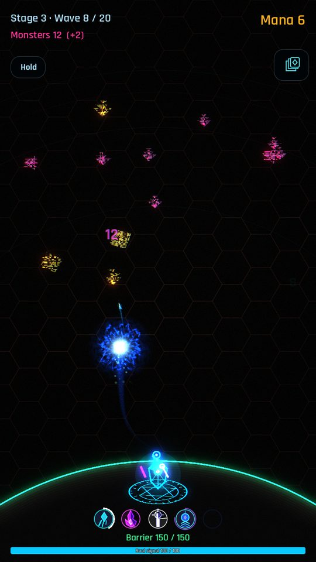
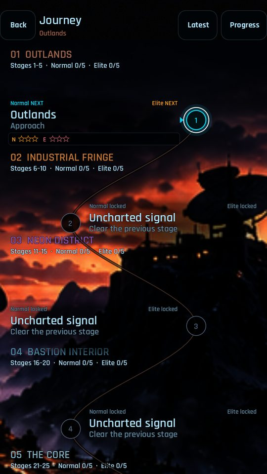
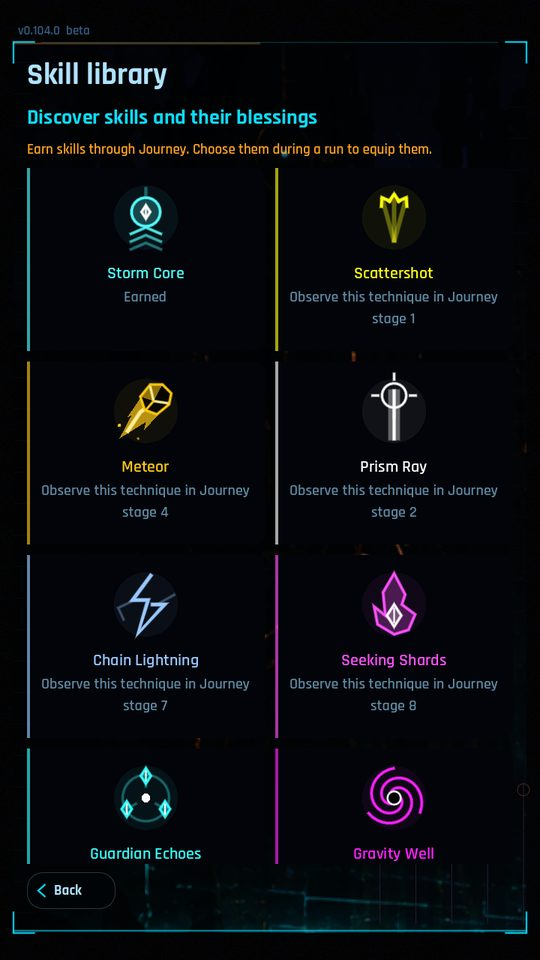
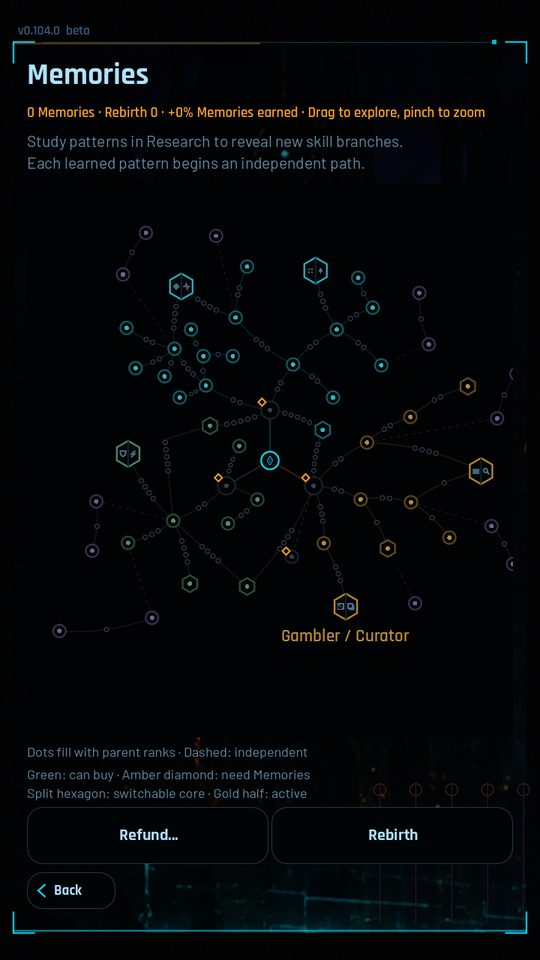
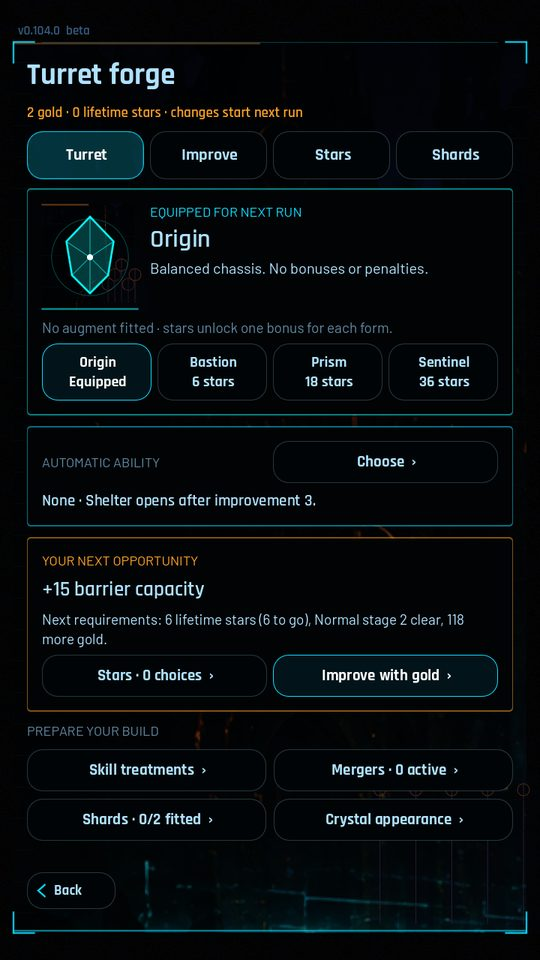

There is no body to move. There is a crystal where your heart should be,
and a thin ring of light holding back a broken digital world. The System calls this
reincarnation. It cannot explain what you were reincarnated from.
Neon Bastion is a single-player, portrait tower defense game for Android. You hold one
position against an advancing signal, choose a blessing after every wave, and spend what
you earn on permanent growth between runs. Each run is short. The progress is not.
Screens

Combat. Your skills fire on their own; tap a monster to focus them.

The Journey. Stage briefings, ratings and Elite re-runs.

The skill pool decides which skills and blessings can be offered.

Memories persist across every death. Rebirth trades them for more.

The Forge. Embed shards in the crystal and merge matching ones upward.
Captured from the current beta build, v0.104.0.
Hold the line
Defend your crystal against waves of geometric creatures and the bosses that follow
them. Your skills fire automatically; tap a threat to focus your attacks on it. Watch what
the enemy telegraphs, keep your barrier alive, and shape a build that survives the next
wave rather than the last one.
Choose your build
Mana Bolt is always mounted — it is the turret itself, not a slot. Around it there
are nine skills to discover: Storm Core, Scattershot, Meteor, Prism Ray, Chain Lightning,
Seeking Shards, Guardian Echoes, Gravity Well and Ember Wheel. Blessings change their
power, timing, reach and behaviour, and the right pair of skills can be engineered into a
single merged one.
Every wave brings another blessing offer. Spend run mana to reroll it, reserve a card for
the next offer, expel one you never want to see again this run, fortify your barrier or buy
a rarer hand. Prices rise as the run goes on. Between runs, the skill pool decides which
skills and blessings are allowed to appear at all.
Make each life count
Runs end. What you earned does not. Memories grow a branching map of permanent upgrades
with real either-or choices; gold buys Research; shards are embedded into the crystal and
five matching shards merge into a higher tier; mastery stars unlock new turret forms. When
there is nothing left to buy, Rebirth trades your current progress for a larger ceiling.
Follow the broken signal
The Journey runs twenty-five stages across five regions and ends at the Convergence.
Clearing a stage on Normal opens its Elite version. Endless keeps going until you cannot
hold, with its own presets, records and achievement tracks.
Built for a phone
Portrait, one-handed, touch only. Hold a run and the game writes it to disk, so an
interrupted session resumes where it stopped — backgrounding the app does the same
thing by itself. Music and effects have separate volume, and there are battery-saver and
reduced-effects options for phones that need them.
Your progress is yours
It plays offline. There is no account to make and nothing to sign in to. Progress is stored on your own device, and a save code exported from
Settings moves it to another install. See support for how, and
your data for how to delete it.
There is no advertising in the game today and nothing to buy. If that changes it will
stay optional: an ad you can choose to watch for a bonus, and a one-time purchase for
conveniences like switching those off. No forced ads, no currency packs, and nothing that
puts progress behind money.
Where it is
Neon Bastion is in testing on Google Play and is not publicly released yet. It needs
people on real phones before it goes out, because so far it has been tested on almost
none. Joining takes three steps, and the game is free while
it is in testing and after.